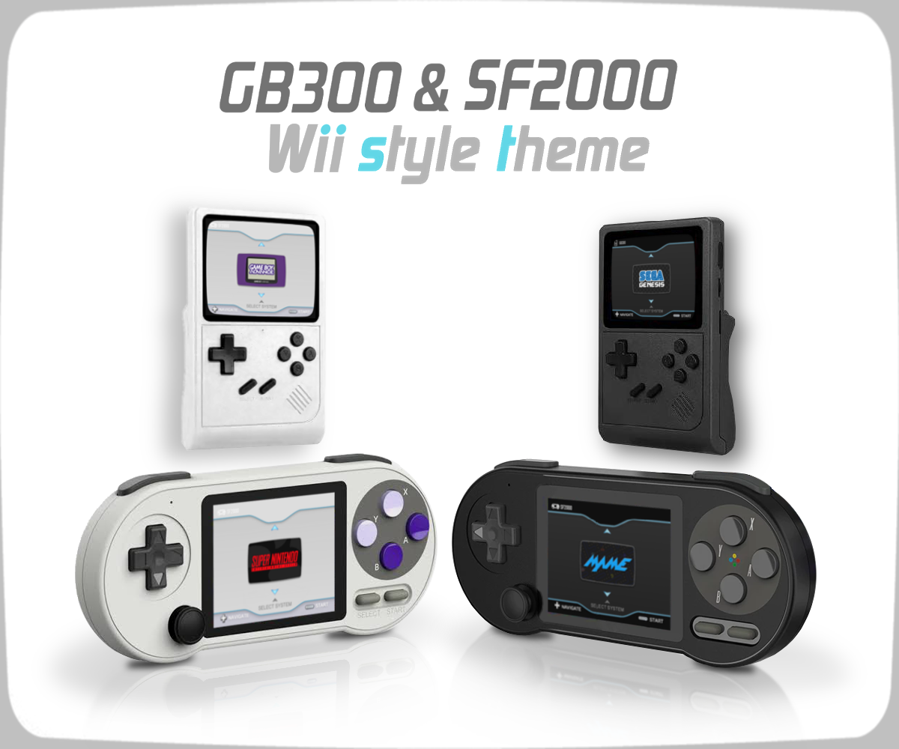

SF2000 Custom Themes
- ・How to install the theme
Simply unzip the downloaded theme ZIP file and overwrite it to the Resources folder on SD card.
*Please read the notes in the Readme.txt included in the theme ZIP file.
(Github)
https://github.com/Q-ta-s/SF2000-Custom-Themes/releasestag/latest
(SF2000 Theme Collection)
https://zerter555.github.io/sf2000-collection


« Back
- 1. Wii menu like style theme
- 2. Wii menu like style theme
(without CRT TV-overlay) - 3. Wii menu like style Dark theme
- 4. Wii menu like style Dark theme
(without CRT TV-overlay) - 5. Wii menu like style theme - ST
- 6. Wii menu like style theme
(without CRT TV-overlay) - ST - 7. Wii menu like style Dark theme - ST
- 8. Wii menu like style Dark theme
(without CRT TV-overlay) - ST


* The above Wii style custom theme is a theme for those who have installed multicore.
If have any problems with the above theme, such as not being able to start the game properly, please try the ST version below.


・ Wii menu like style theme - 13 menus version
(* Please download the multicore "13 menus extended" build and overwrite to the "bios" folder.)

・ (plugin) Wii style theme - Hyper Cube Game Menu
This is a plugin that changes the game selection list menu to a new interface. (* currently a testing release.)


・(icon) Wii style theme - Icon Pack

- 9. E2-PB like style theme
- 10. E2-PB like style Dark theme


・E2-PB like style theme - Mario Kart Edition
Discord - the custom theme at "Let's make your own favorite theme in the like style of E2-PB!" voting project. (which received the most votes)


・E2-PB like style Dark theme - Retro Gamers Edition
Discord - the custom theme at "Let's make your own favorite theme in the like style of E2-PB!" voting project.

- 11. SF3000 UI
- 12. SF3000 UI - Master Edition


- 13. RetroXMB
- 14. RetroXMB Alternative (Old Fashion)


- 15. BLACK FRIDAY NIGHT Theme


« Back